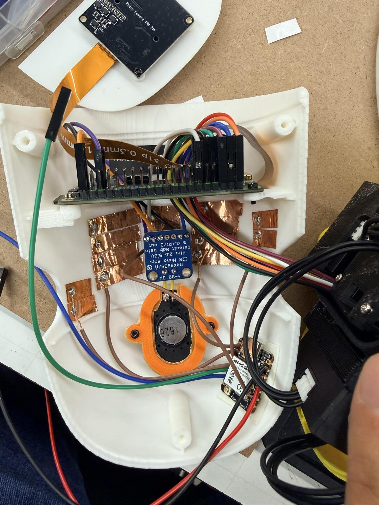

Hardware and bring-up
Custom printed parts, servo-chain assembly, dual-host OpenRB controller firmware, an A7Z head computer, camera and inertial sensor, touch pads, speaker, and power integration.
Personal hardware build · Robot learning
A low-cost walking robot for testing how perception, learned control, and physical hardware behave together.
My role Continuing personal project: I built and integrated the robot and developed controller/runtime extensions, the as-built simulation, evaluation checks, and learning experiments. Camera-guided pickup is also the research topic of our five-person CMU 16-831 course team.
A policy that walks in a simulator still has to run through an imperfect servo chain, delayed measurements, flexible printed parts, power limits, and a small onboard computer.
I built this 15-joint MicroDuck at the CMU RoboClub from Pollen Robotics' open design and a community build tutorial, then made its physical behavior measurable.
Custom printed parts, servo-chain assembly, dual-host OpenRB controller firmware, an A7Z head computer, camera and inertial sensor, touch pads, speaker, and power integration.
Heading hold, touch-triggered stop and hold, camera streaming, event logs, and controls for standing, walking, and scripted behaviors.
A model aligned with the assembled robot, measured joint and sensing limits, acceptance scenarios, and checks that distinguish real hardware conditions from stress tests.
Reward-term audits and policy comparisons. An early fine-tune increased total reward by standing still; decomposing the reward exposed that failure before deployment.

The target behavior is a continuous sequence: find an object, approach it, bend while balancing, grasp with the beak, and return upright. Each part needs its own evidence.
Pollen Robotics supplies the original design, training environment, and standing/walking policies. AI-FanGe's community tutorial supplies the starting build set and Raspberry Pi runtime. CMU RoboClub provides shared tools and printers. My work is the physical build and extensions described above.
Hardware demonstrations are dated in their captions. Current work continues in the training repository.